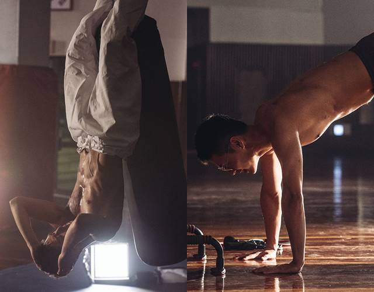

외면 변화시키기

- 운동 : 헬스장, 못 갈때 맨몸 운동
대운동 위주, 어깨, 등, 가슴, 전완근, 복근, 코어
- 피부 : 점빼기, 패스트푸드(햄버거,피자,치킨,라면) 금지, 과일 채소 많이먹기, 물 많이 마시기
얼굴 안만지기, 세안 잘하기,일찍 자기
- 패션 : 무채색 위주 무난한 남친룩, 완벽한 핏 찾기, 코트/니트 무난.12월 되면 고민하기
- 헤어 : 머리 앞 볼륨, 구렛나루 20~30mm 다운펌, 애즈펌 이마 살짝보이게
- 그외 : 향수, 눈썹관리, 손발톱, 콧털, 썬크림 등